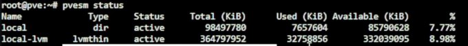
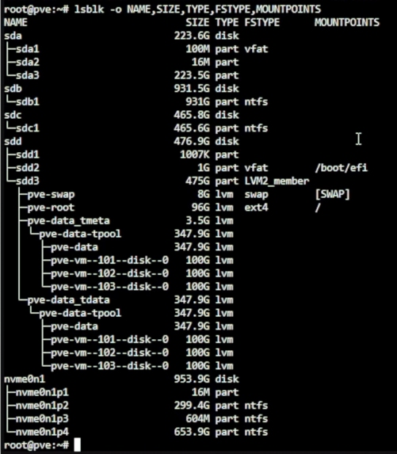
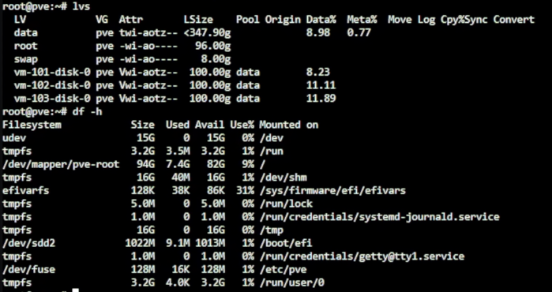
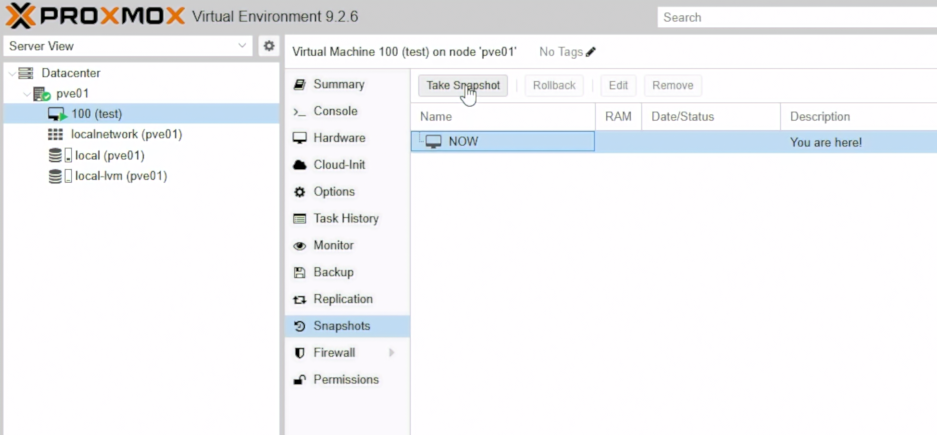
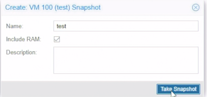
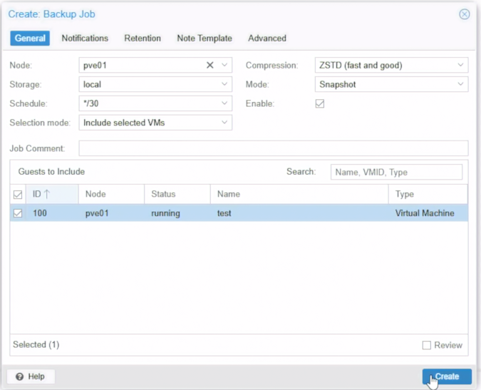
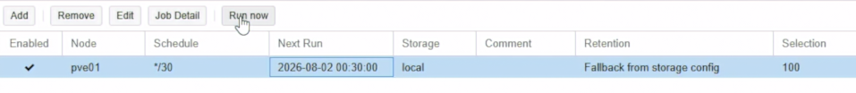
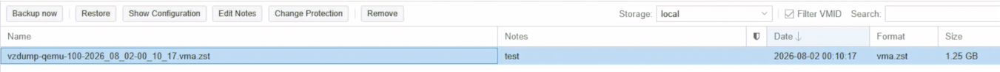

Day 04｜從一顆磁碟到共享儲存：檔案系統、RAID、ZFS、快照與備份
對應文章：Day 04｜從一顆磁碟到共享儲存：檔案系統、RAID、ZFS、快照與備份
本日不重裝主機，使用 Day 03 已完成的 pve-l0 與三台巢狀 PVE 說明 local、local-lvm、Snapshot 與 Backup 的責任差異。
1. 盤點目前儲存
- 登入
pve-l0。 - 選
Datacenter→Storage，確認local與local-lvm。 - 選
pve-l0→Disks→LVM-Thin，確認 Thin Pool 狀態。 - 選 VM 101 →
Hardware→Hard Disk，確認磁碟位於local-lvm。 - 在 Shell 執行：
pvesm status
lsblk -o NAME,SIZE,TYPE,FSTYPE,MOUNTPOINTS
lvs
df -h

圖（一）使用 pvesm status 查看 PVE Storage 狀態。

圖（二）使用 lsblk 查看實體磁碟、分割區與 LVM 結構。

圖（三）使用 lvs 與 df 確認 Logical Volume 與檔案系統用量。
2. local 與 local-lvm
- 儲存：local
- 用途：ISO、Template、備份檔
- 重點：它是檔案型儲存
- 儲存：local-lvm
- 用途：VM 虛擬磁碟
- 重點：支援 Thin Provisioning
3. Snapshot 實驗
- 啟動一台不重要的測試 VM。如果尚未建立一般 Linux VM，可先用 L0 VM 101 測試 Snapshot 介面。我這裡用 Debian 建立一個測試 VM 示範。
- 選 VM →
Snapshots→Take Snapshot。

圖（四）從測試 VM 建立 Snapshot。
- Name 填
before-storage-demo，Description 填拍攝日期與目的。

圖（五）設定 Snapshot 名稱與是否包含記憶體狀態。
- 確認 Snapshot 出現在清單中。
- 測試 Rollback，可以先新增或修改一個測試文件，再確認 Rollback 後是否回到原本狀態。
4. vzdump 備份實驗
- 選
Datacenter→Backup→Add。 - Node 選目前測試節點，Storage 選
local。 - Schedule 先選錄影方便執行的時間，Selection mode 選
Include selected VMs。 - 只選測試 VM。Mode 選
Snapshot，Compression 選ZSTD。

圖（六）建立測試用 vzdump Backup Job。圖中的每 30 分鐘排程只供錄影測試。
- 建立後選該 Job，按
Run now。

圖（七）手動執行剛建立的 Backup Job。
- 到節點 →
local→Backups確認產生備份檔。

圖（八）確認 local Storage 已產生 vzdump 備份檔。
- 可先在測試 VM 建立一個識別文件，再點選備份測試
Restore。還原時使用另一個未使用的 VMID，不要直接覆蓋原本的測試 VM。開機後確認識別文件存在。 - 圖中的
*/30是錄影用暫時排程，測試完成後停用或刪除這個 Backup Job，避免持續占用local空間。
CLI 可使用：
vzdump 100 --storage local --mode snapshot --compress zstd
執行先確認 local 空間足夠。